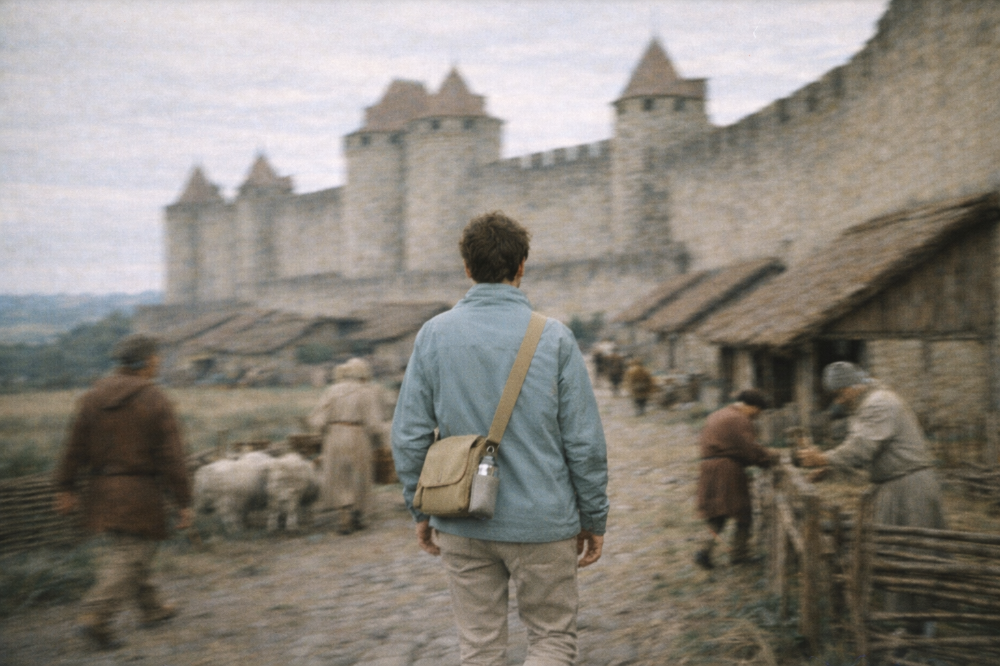
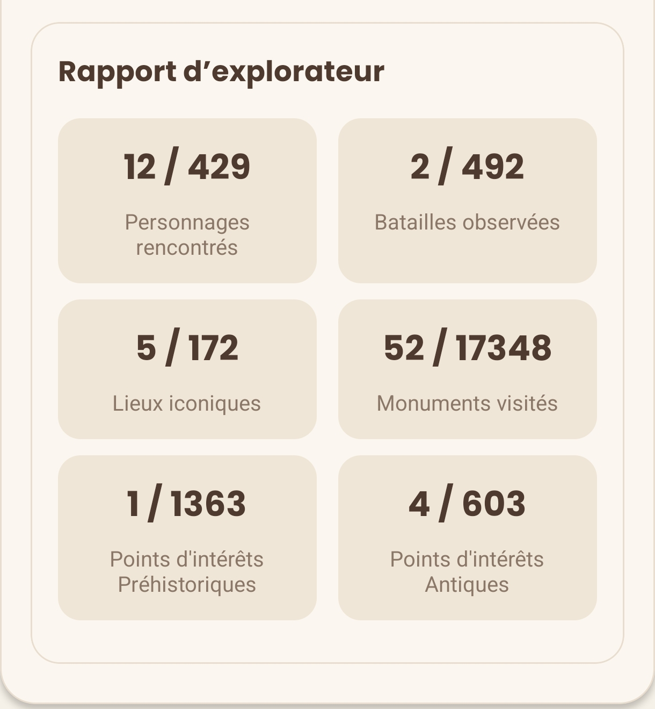
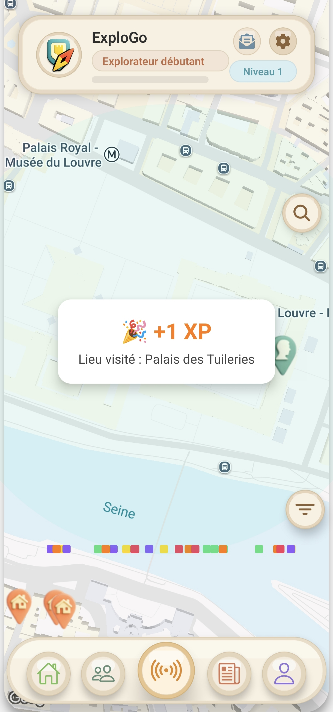
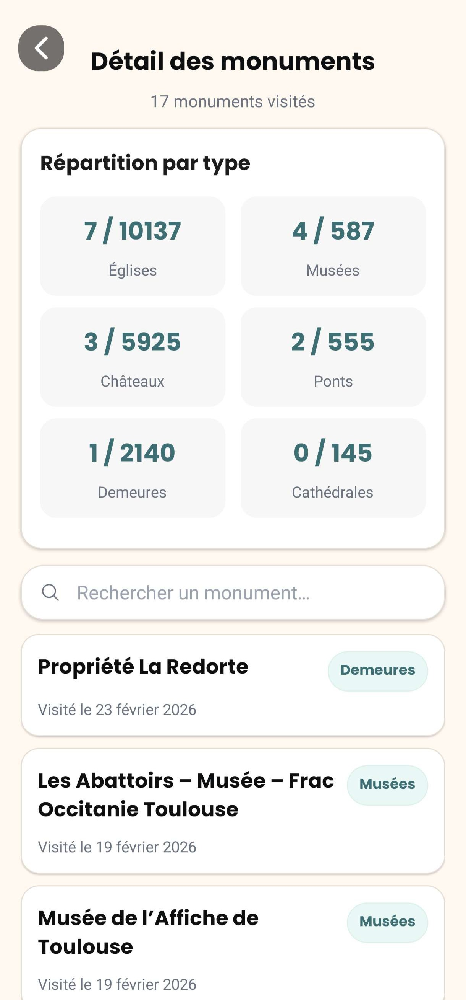

Paliers par catégorie
Chaque type de lieu possède ses propres seuils de progression. Quand tu atteins un palier, tu débloques un bonus XP et une nouvelle récompense.
Scanne des lieux sur place, gagne des niveaux, complète ta collection et suis tes progrès dans ton rapport d’explorateur.


Chaque monument visité te fait gagner de l’XP et te permet d'augmenter le niveau de ton compte. Plus tu explores, plus tu débloques des bonus et de nouvelles récompenses.
Les lieux les plus rares rapportent plus d’XP : personnages, batailles, lieux majeurs, cathédrales, musées.
Les catégories très présentes en France, comme les églises, châteaux et demeures, rapportent un peu moins, mais permettent de progresser régulièrement.

ExploGo te donne des repères simples : tu avances à chaque visite, tu franchis des paliers réguliers et tu vois ta progression grandir sans blocage.
Chaque type de lieu possède ses propres seuils de progression. Quand tu atteins un palier, tu débloques un bonus XP et une nouvelle récompense.
Ton nombre total de lieux visités compte aussi. Cela encourage une exploration variée et valorise l’ensemble de tes découvertes.
Un suivi clair : un historique de ce que tu as vu et tes collections par catégorie.
5/408
Personnages rencontrés
2/492
Batailles observées
6/172
Sites majeurs visités
17/19489
Monuments scannés
4/1364
Points d’intérêt préhistoriques
5/603
Points d’intérêt antiques
Chaque chiffre est une découverte réelle : tu progresses après chaque visite !
Classements par type, recherche rapide, et historique de visite.

21 monuments visités
0/10137
Églises
0/2140
Demeures
0/587
Musées
0/5925
Châteaux
0/555
Ponts
0/145
Cathédrales
0 résultat(s)
Aucun monument trouvé.
Essaie “église”, “toulouse”, “pont”…
Télécharge ExploGo et commence à scanner autour de toi.